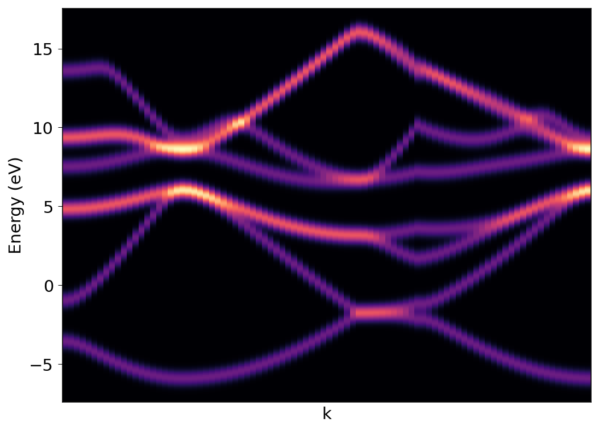

k-resolved pDOS
Here we will calculate k-resolved density of states. First we begin with self consistent field calculation. Here is the input:
&CONTROL
calculation = 'scf'
prefix = 'silicon'
outdir = './tmp/'
pseudo_dir = '../pseudo/'
verbosity = 'high'
/
&SYSTEM
ibrav = 2
celldm(1) = 10.26
nat = 2,
ntyp = 1,
ecutwfc = 50
nbnd = 8
/
&ELECTRONS
mixing_beta = 0.5
/
ATOMIC_SPECIES
Si 28.086 Si.pz-vbc.UPF
ATOMIC_POSITIONS (alat)
Si 0.0 0.0 0.0
Si 0.25 0.25 0.25
K_POINTS (automatic)
8 8 8 0 0 0
We run the pw.x calculation:
$ pw.x -inp si-scf.in > si-scf.out
Next we perform the band calculation. Input as follows:
&CONTROL
calculation = 'bands'
prefix = 'silicon'
outdir = './tmp/'
pseudo_dir = '../pseudo/'
verbosity = 'high'
/
&SYSTEM
ibrav = 2
celldm(1) = 10.26
nat = 2,
ntyp = 1,
ecutwfc = 50
nbnd = 8
/
&ELECTRONS
mixing_beta = 0.5
/
ATOMIC_SPECIES
Si 28.086 Si.pz-vbc.UPF
ATOMIC_POSITIONS (alat)
Si 0.0 0.0 0.0
Si 0.25 0.25 0.25
K_POINTS {crystal_b}
5
0.0000 0.5000 0.0000 20 !L
0.0000 0.0000 0.0000 30 !G
-0.500 0.0000 -0.500 10 !X
-0.375 0.2500 -0.375 30 !U
0.0000 0.0000 0.0000 20 !G
$ pw.x -inp si-bands.in > si-bands.out
Calculate the orbital projections with k-resolved information:
&projwfc
outdir = './tmp/'
prefix = 'silicon'
ngauss = 0
degauss = 0.036748
DeltaE = 0.005
kresolveddos = .true.
filpdos = 'silicon.k'
/
$ projwjc.x inp si-projwfc.in > si-projwfc.out
This will give separate orbital projections, as well as total sum for k-resolved DOS. We can sum desired projections using sumpdos.x as well. For example:
sumpdos.x *\(Cl\)*\(p\) > Cl_2p_tot.dat

Note: If you are using ibrav=0, you can calculate projwfc with lsym=.false. option.